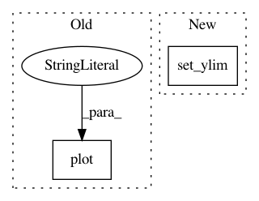

080a81f3e61ab88b947effe2bb8362adbb08796f,pygsp/plotting.py,,_plt_plot_signal,#Any#Any#Any#Any#Any#Any#Any#Any#,555
Before Change
x3 = x2[i:i + 2]
y3 = y2[i:i + 2]
z3 = z2[i:i + 2]
ax.plot(x3, y3, z3, color="grey", marker="o",
markerfacecolor="blue", zorder=1)
// Plot signal
if G.coords.shape[1] == 2:
sc = ax.scatter(G.coords[:, 0], G.coords[:, 1],
After Change
// Plot signal
if G.coords.ndim == 1:
ax.plot(G.coords, signal)
ax.set_ylim(limits)
elif G.coords.shape[1] == 2:
sc = ax.scatter(G.coords[:, 0], G.coords[:, 1],
s=vertex_size, c=signal, zorder=2,
vmin=limits[0], vmax=limits[1])
In pattern: SUPERPATTERN
Frequency: 4
Non-data size: 2
Instances
Project Name: epfl-lts2/pygsp
Commit Name: 080a81f3e61ab88b947effe2bb8362adbb08796f
Time: 2017-08-27
Author: michael.defferrard@epfl.ch
File Name: pygsp/plotting.py
Class Name:
Method Name: _plt_plot_signal
Project Name: epfl-lts2/pygsp
Commit Name: efe203db38fc6a51b42321696e951338e3de20bf
Time: 2017-09-20
Author: michael.defferrard@epfl.ch
File Name: pygsp/plotting.py
Class Name:
Method Name: plot_filter
Project Name: DistrictDataLabs/yellowbrick
Commit Name: 56236f3d3c7cafcad716a14f36d98bd66eeedd94
Time: 2016-06-26
Author: benjamin@bengfort.com
File Name: yellowbrick/regressor.py
Class Name: PredictionError
Method Name: render
Project Name: DistrictDataLabs/yellowbrick
Commit Name: 56236f3d3c7cafcad716a14f36d98bd66eeedd94
Time: 2016-06-26
Author: benjamin@bengfort.com
File Name: yellowbrick/anscombe.py
Class Name:
Method Name: anscombe